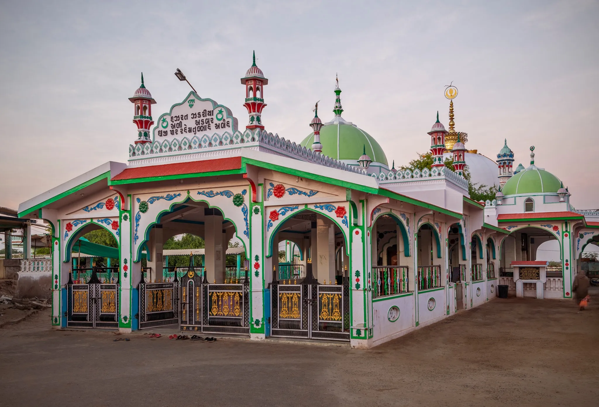

The Haji Pir Dargah is a revered shrine on the edge of the India-Pakistan border, dedicated to the soldier-saint Ali Akbar. Known as 'Zinda Pir' (Living Saint), he is worshipped by both Hindus and Muslims, standing as a powerful symbol of communal harmony in Kutch. Legend says he died while saving cows from bandits, making him a martyr for a noble cause. The drive here takes you through the stark, beautiful landscapes of the Banni grasslands.
Who Should Visit
- Spiritual Seekers: A place of deep faith and peace.
- Culture Lovers: To witness the unique syncretic culture of the border region.
- Drive Enthusiasts: The road leading here offers raw, untouched desert views.
How to Reach
- Spiritual Seekers: A place of deep faith and peace.
- Culture Lovers: To witness the unique syncretic culture of the border region.
- Drive Enthusiasts: The road leading here offers raw, untouched desert views.
Landmarks & Heritage
The defining monuments

Offer Chadar
It is customary to offer a 'Chadar' (holy cloth) at the shrine.
Tie a Thread
Devotees tie red or orange threads on the Jaali (lattice) windows to make a wish (Mannat).
Explore the Desert
The surrounding area is vast and silent, offering a meditative atmosphere.
Annual Fair (Urs)
If visiting in April, witness the massive fair where people walk on fire (Karad).
Curated Local Advice
Border Sensitivity
You are very close to the border. Do not fly drones or stray off the main roads.
Shopping & Bazaars
- Check local guides for shopping.
Local Eats
- Check local guides for food.
When to Visit
Winter (Nov-Feb): Best weather.
April (Urs): Only if you
want to attend the crowded festival. It gets very hot.
Nearby Places to Visit
Suggested Itinerary
Haji Pir is often done as a specific trip or combined with the Northern circuit.
00 AM: Depart Bhuj.
30 AM: Tea stop at Bhirandiyara (famous for Mava tea).
30 AM: Reach Haji Pir. Darshan.
00 PM: Picnic lunch (carry your own).
30 PM: Return to Bhuj or head towards Kalo Dungar (via internal roads if open/permitted).
Location & Gallery

